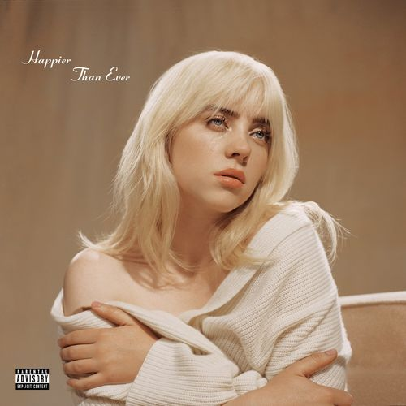

Почетна страна Каријера Награде Занимљивости О аутору
Сајт од Били Ајлиш
Били Ајлиш је америчка певачица и текстописац. Први пут је привукла пажњу јавности 2015. године својим дебитантским синглом "Ocean Eyes", који је касније избацио студио Darkroom, подружница Interscope Records. Песму је написао и продуцирао њен брат Финеас О'Конел, са којим често сарађује на музици и у емисијама уживо. Њена дебитантска продужена представа, Дон'т Смиле ат Ме (2017), била је комерцијално успешна и нашла се међу 15 најбољих у САД, Великој Британији, Канади и Аустралији.
Били Ајлиш рођена је у Лос Анђелесу, Калифорнија 18. децембра 2001. Она је ћерка глумице и учитељице Меги Бејрд и глумца Патрика О'Конела, који су такође музичари и раде на њеним турнејама.
Били и њеног брата Финеаса су родитељи школовали код куће, што је одлука коју су њихови родитељи донели да проводе време са њима и да им дају слободу да остваре своје интересе. Они су иџ подучавали основама писања песама.
Први албум који је направила зове се "Don't Smile At Me", који садржи 9. песама.

Други албум је "WHEN WE ALL FALL ASLEEP, WHERE DO WE GO?", који садржи 13. песама.

Трећи и последњи албум се зове "Happier Than Ever", који садржи 16. песама.
Велики део медијске пажње око Били окренуо се око њеног модног стила, који се првенствено састоји од широке, превелике одеће.
Њен стил певања се доста променио током њеног раста у каријери.
Одрастајући Били је слушала Битлсе, Џастин Бибер, Грин Деј, Арктик Манкејс, Линкин Парк и Ланда Дел Реј. Они су имали велики утицај на њу и на њену музичку каријеру и њен стил.
Ајлиш се први пут појавила на Мет Гали 2021. године, која је имала тему „У Америци: Лексикон моде“, носећи хаљину Оскар де ла Рента под условом да модна кућа трајно прекине употребу правог крзна.
Иако је хаљина инспирисана оригиналном Барби лутком, модни критичари су приметили да личи на звезду Златног доба Мерилин Монро, која је такође носила хаљину Оскар де ла Рента од тила почетком 1950-их.
Били је у свом животу направила неколико докумнетараца и учествовала у телевизији.
2020. године Били је учествовала у филму "Justin Bieber: Seasons", а направила је и своје документарац "Coachella: 20 Years in the Desert", као и кратак филм "Not My Responsibility"
2021. године направила је документарац "Billie Eilish: The World's a Little Blurry" и учествовала је у "Saturday Night Live"
2022. је учествовала у телевизијској серији Сезами Стрит